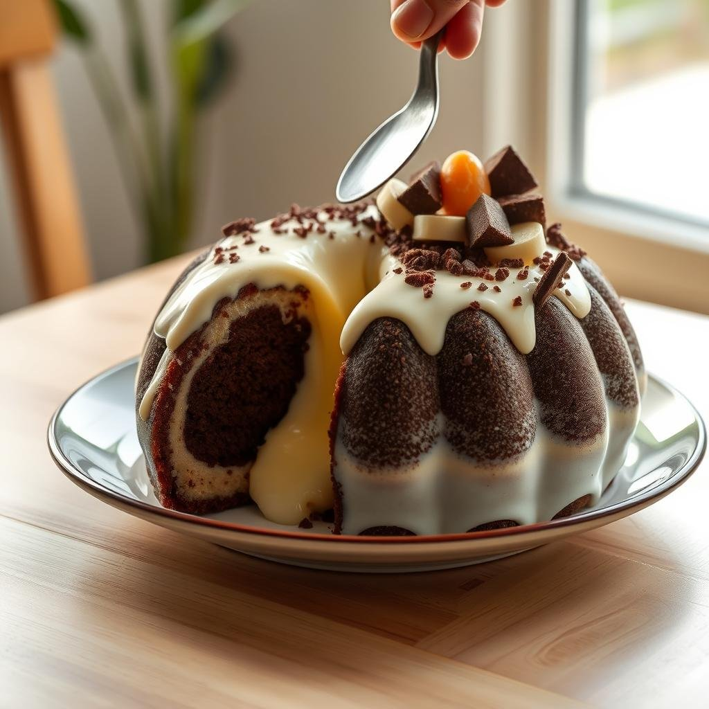

Doces · Tortas e bolos
Bolo de sorvete com cerejas

Ingredientes
- 2 xícaras de sorvete crocante
- cerca de 200 g de biscoitos champanha
- licor Cointreau
- 2 xícaras de sorvete de baunilha ou creme
- ⅓ xícara de chocolate cobertura ralado
- 2 xícaras de creme de leite fresco
- cerca de 1½ xícara de cerejas em calda ou cristalizadas
Modo de preparo
- Forre fôrma quadrada (~1½ litro) com papel-manteiga esticado.
- Espalhe sorvete crocante e cubra com biscoitos champanha molhados no Cointreau.
- Por cima, sorvete de baunilha. Leve à geladeira para firmar e congele.
- Derreta chocolate em fogo brando e deixe esfriar perto de chama para não endurecer.
- Bata creme de leite firme, incorpore chocolate frio e congele separadamente.
Observação
Rendimento: 8 porções. Descongele bolo e creme na geladeira; decore borda com creme e superfície com cerejas.